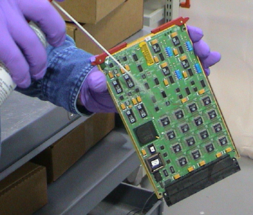
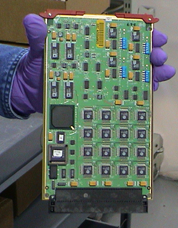

Illustration 1: Proper method for handling converter cards

Illustration 1: Proper method for handling converter cards
Illustration 2: Cleaning with Amax, connector facing down

Illustration 3: Correct Board position for Amax to dry
